5 Demographics
How do the demographics of participants correlate with donation behavior? Much of these questions have been previously asked in relation to charitable donations, hopefully our results match these.
5.1 Patient Gender
Not a demographic variable, but important to see before setting up congruence effects.
trials %>%
ggplot(aes(cond_sex, donation)) + itheme +
geom_errorbars +
coord_cartesian(ylim = c(20, 30))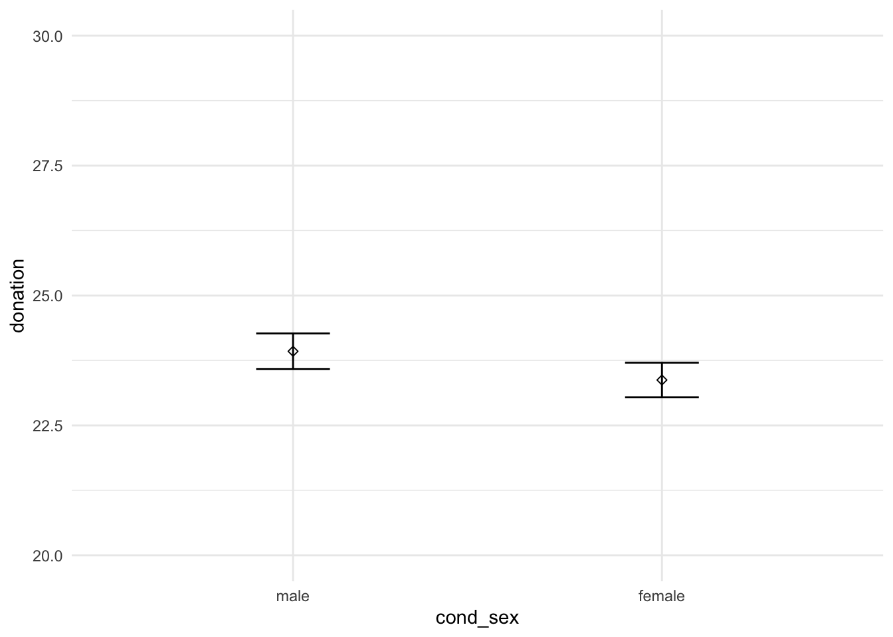
model_sex_base = lm(update(base.formula, donation ~ . - cond_sex), data = trials)
model_sex_full = lm(update(base.formula, donation ~ .), data = trials)
compare_lm(model_sex_base, model_sex_full)## Analysis of Variance Table
##
## Model 1: donation ~ self_cancer + ff_cancer + gender + education + socioeconomic +
## past_donations.z + age.z
## Model 2: donation ~ cond_sex + self_cancer + ff_cancer + gender + education +
## socioeconomic + past_donations.z + age.z
## Res.Df RSS Df Sum of Sq Pr(>Chi)
## 1 4561 1173172
## 2 4560 1172938 1 234.46 0.3397
## [1] Chisq Stat: 0.9165.2 Gender
NH: Men and women donate the same amounts on average
# a = trials %>%
# filter(gender %in% c("M", "F")) %>%
# ggplot(aes(gender, donation)) + ptheme +
# labs(title = "Participant Gender and Donations\n") +
# stat_summary(fun.data = mean_se, geom = "errorbar", position = position_dodge(width = 0.35), width = 0.2) +
# stat_summary(fun.data = mean_se, geom = "point", shape = 5, position = position_dodge(width = 0.35)) +
# scale_x_discrete(labels = c("M" = "Male\n", "F" = "Female\n")) +
# scale_y_continuous(labels = scales::dollar) +
# coord_cartesian(ylim = c(20, 30)) +
# scale_color_brewer(palette = "Set1") +
# labs(x = element_blank(), y = "Donation") +
# geom_signif(comparisons = list(c("M", "F")),
# y_position = 26.7,
# tip_length = 0.01,
# textsize = 2.75,
# annotations = "list({\U03C7^2}(1) == 3.8, ~~ p < 0.06)",
# parse = T)
#
# amodel_gender_base = lm(update(base.formula, donation ~ . - gender),
data = filter(trials, gender %in% c("M", "F")))
model_gender_full = lm(update(base.formula, donation ~ .),
data = filter(trials, gender %in% c("M", "F")))
compare_lm(model_gender_base, model_gender_full)## Analysis of Variance Table
##
## Model 1: donation ~ cond_sex + self_cancer + ff_cancer + education + socioeconomic +
## past_donations.z + age.z
## Model 2: donation ~ cond_sex + self_cancer + ff_cancer + gender + education +
## socioeconomic + past_donations.z + age.z
## Res.Df RSS Df Sum of Sq Pr(>Chi)
## 1 4524 1163969
## 2 4523 1162876 1 1093.6 0.03917 *
## ---
## Signif. codes: 0 '***' 0.001 '**' 0.01 '*' 0.05 '.' 0.1 ' ' 1
## [1] Chisq Stat: 4.273## Warning in if (cls == c("lm") | cls == c("glm", "lm")) {: the condition has
## length > 1 and only the first element will be used## MODEL INFO:
## Observations: 4546
## Dependent Variable: donation
## Type: OLS linear regression
##
## MODEL FIT:
## F(22,4523) = 4.564, p = 0.000
## R² = 0.022
## Adj. R² = 0.017
##
## Standard errors: OLS
## ------------------------------------------------------------------------
## Est. 2.5% 97.5% t val. p
## --------------------------- -------- --------- -------- -------- -------
## (Intercept) 22.534 16.141 28.927 6.910 0.000
## cond_sexfemale -0.447 -1.381 0.488 -0.937 0.349
## self_cancerY 4.665 2.427 6.903 4.086 0.000
## self_cancerOO 5.340 0.449 10.230 2.141 0.032
## ff_cancerY 1.839 0.833 2.846 3.582 0.000
## ff_cancerOO 2.846 -0.779 6.471 1.539 0.124
## genderF 0.999 0.049 1.949 2.062 0.039
## educationHS -2.183 -8.568 4.203 -0.670 0.503
## educationA -2.065 -8.539 4.408 -0.625 0.532
## educationB -0.758 -7.126 5.611 -0.233 0.816
## educationM 0.809 -5.659 7.278 0.245 0.806
## educationP -0.403 -7.366 6.560 -0.114 0.910
## educationD -1.659 -8.844 5.525 -0.453 0.651
## educationOO -2.159 -12.758 8.440 -0.399 0.690
## socioeconomic10-25k -1.006 -2.775 0.762 -1.116 0.265
## socioeconomic25-50k 0.028 -1.579 1.636 0.035 0.972
## socioeconomic50-75k 1.106 -0.598 2.810 1.273 0.203
## socioeconomic75-100k 1.949 -0.008 3.906 1.953 0.051
## socioeconomic100-150k 1.011 -1.240 3.262 0.881 0.378
## socioeconomic>150k 1.651 -1.512 4.813 1.023 0.306
## socioeconomicOO -2.052 -5.286 1.183 -1.243 0.214
## past_donations.z 1.079 0.147 2.010 2.271 0.023
## age.z 0.394 -0.557 1.345 0.812 0.417
## ------------------------------------------------------------------------Gender has a signficant relationship to donation amount (Chisq = 3.9, p < 0.05), with females donating about $0.97 more than males.
NH: Men and women donate the same amounts regardless of the family of metaphor they were exposed to
g = trials %>%
filter(gender %in% c("M", "F")) %>%
ggplot(aes(cond_metaphor, donation, color = gender)) + itheme +
labs(title = "Interaction between Metaphor and Participant Gender") +
geom_errorbars +
scale_y_continuous(labels = scales::dollar) +
scale_x_discrete(expand = c(0, 1.5)) +
coord_cartesian(ylim = c(20, 30)) +
labs(x = "Metaphor Condition", y = "Donation")
# ggsave("gender_metaphor.png", g, width = 7, height = 3)
g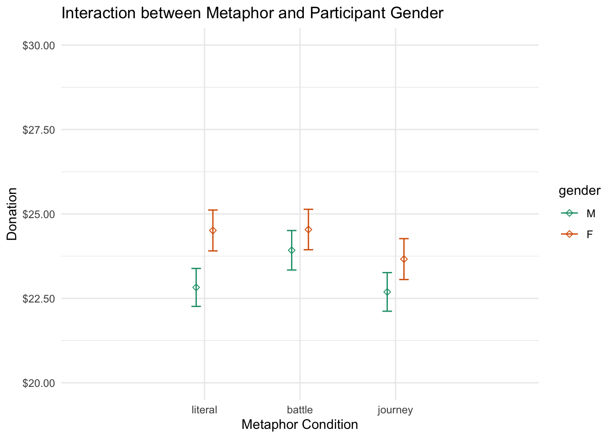
model_gender_base = lm(update(base.formula, donation ~ . + cond_metaphor - gender),
data = filter(trials, gender %in% c("M", "F")))
model_gender_mid = lm(update(base.formula, donation ~ . + cond_metaphor),
data = filter(trials, gender %in% c("M", "F")))
model_gender_full = lm(update(base.formula, donation ~ . + cond_metaphor * gender),
data = filter(trials, gender %in% c("M", "F")))
compare_lm(model_gender_base, model_gender_mid)## Analysis of Variance Table
##
## Model 1: donation ~ cond_sex + self_cancer + ff_cancer + education + socioeconomic +
## past_donations.z + age.z + cond_metaphor
## Model 2: donation ~ cond_sex + self_cancer + ff_cancer + gender + education +
## socioeconomic + past_donations.z + age.z + cond_metaphor
## Res.Df RSS Df Sum of Sq Pr(>Chi)
## 1 4522 1162833
## 2 4521 1161767 1 1066.2 0.04166 *
## ---
## Signif. codes: 0 '***' 0.001 '**' 0.01 '*' 0.05 '.' 0.1 ' ' 1
## [1] Chisq Stat: 4.17## Warning in if (cls == c("lm") | cls == c("glm", "lm")) {: the condition has
## length > 1 and only the first element will be used## MODEL INFO:
## Observations: 4546
## Dependent Variable: donation
## Type: OLS linear regression
##
## MODEL FIT:
## F(24,4521) = 4.366, p = 0.000
## R² = 0.023
## Adj. R² = 0.017
##
## Standard errors: OLS
## ------------------------------------------------------------------------
## Est. 2.5% 97.5% t val. p
## --------------------------- -------- --------- -------- -------- -------
## (Intercept) 22.503 16.080 28.926 6.869 0.000
## cond_sexfemale -0.426 -1.361 0.508 -0.894 0.371
## self_cancerY 4.709 2.470 6.947 4.124 0.000
## self_cancerOO 5.289 0.400 10.179 2.121 0.034
## ff_cancerY 1.860 0.854 2.867 3.623 0.000
## ff_cancerOO 2.814 -0.813 6.440 1.521 0.128
## genderF 0.987 0.037 1.936 2.037 0.042
## educationHS -2.283 -8.668 4.101 -0.701 0.483
## educationA -2.180 -8.652 4.293 -0.660 0.509
## educationB -0.832 -7.200 5.535 -0.256 0.798
## educationM 0.737 -5.730 7.205 0.223 0.823
## educationP -0.472 -7.434 6.490 -0.133 0.894
## educationD -1.731 -8.914 5.452 -0.472 0.637
## educationOO -2.497 -13.099 8.105 -0.462 0.644
## socioeconomic10-25k -0.976 -2.745 0.792 -1.082 0.279
## socioeconomic25-50k 0.049 -1.558 1.657 0.060 0.952
## socioeconomic50-75k 1.131 -0.572 2.835 1.302 0.193
## socioeconomic75-100k 1.946 -0.010 3.902 1.951 0.051
## socioeconomic100-150k 1.041 -1.209 3.292 0.907 0.364
## socioeconomic>150k 1.768 -1.397 4.933 1.095 0.273
## socioeconomicOO -2.059 -5.294 1.175 -1.248 0.212
## past_donations.z 1.080 0.148 2.011 2.273 0.023
## age.z 0.381 -0.570 1.333 0.786 0.432
## cond_metaphorbattle 0.721 -0.420 1.861 1.239 0.216
## cond_metaphorjourney -0.491 -1.634 0.651 -0.843 0.399
## ------------------------------------------------------------------------compare_lm(model_gender_mid, model_gender_full)## Analysis of Variance Table
##
## Model 1: donation ~ cond_sex + self_cancer + ff_cancer + gender + education +
## socioeconomic + past_donations.z + age.z + cond_metaphor
## Model 2: donation ~ cond_sex + self_cancer + ff_cancer + gender + education +
## socioeconomic + past_donations.z + age.z + cond_metaphor +
## gender:cond_metaphor
## Res.Df RSS Df Sum of Sq Pr(>Chi)
## 1 4521 1161767
## 2 4519 1161322 2 444.71 0.421
## [1] Chisq Stat: 1.74Gender marginally significantly (p < 0.06) predicts donation conditional on metaphor condition, however there is no interaction between gender and metaphor.
3-way interaction going on between ppt gender, metaphor, and patient gender.
trials %>%
filter(gender %in% c("M", "F")) %>%
mutate(gender = factor(gender)) %>% # to recode the levels of the variable
with(print_crosstabs(ftable(cond_metaphor, cond_sex, gender)))## gender M F
## cond_metaphor cond_sex
## literal male 411 345
## female 415 377
## battle male 405 348
## female 376 374
## journey male 386 327
## female 414 368
##
## gender M F
## cond_metaphor cond_sex
## literal male 0.090 0.076
## female 0.091 0.083
## battle male 0.089 0.077
## female 0.083 0.082
## journey male 0.085 0.072
## female 0.091 0.081trials %>%
filter(gender %in% c("M", "F")) %>%
ggplot(aes(cond_metaphor, donation, color = gender)) + itheme +
geom_errorbars +
labs(x = "Metaphor condition",
y = "Donation",
title = "Donation by metaphor, sex, and participent gender") +
facet_grid(~cond_sex) +
coord_cartesian(ylim = c(20, 30))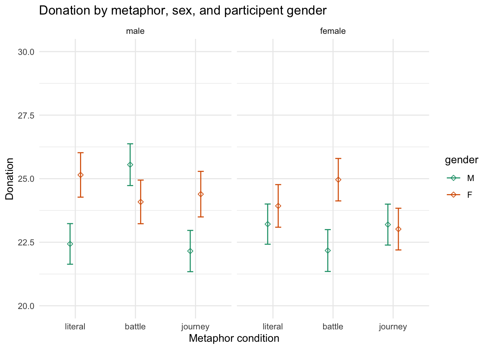
m1 = lm(data = trials, update(base.formula, donation ~ . + cond_metaphor*cond_sex*gender))
m2 = lm(data = trials, update(base.formula, donation ~ . + cond_metaphor*cond_sex*gender))There appears to be a difference between some of these factors (male and female participants exposed to the female battle condition and the male literal condition), although they could be suprious at this level of factorization.
Male stereotype - males changed on battle
5.3 Gender Congruency Effects
print_crosstabs(ftable(trials$cond_metaphor, trials$congruency))## congruent incongruent
##
## literal 788 774
## battle 779 735
## journey 754 755
##
## congruent incongruent
##
## literal 0.172 0.169
## battle 0.170 0.160
## journey 0.164 0.165trials %>%
ggplot(aes(congruency, donation)) + itheme +
geom_errorbars +
labs(x = "Congruency", y = "Donation", title = "Donation by gender congruence") +
coord_cartesian(ylim=c(20, 30))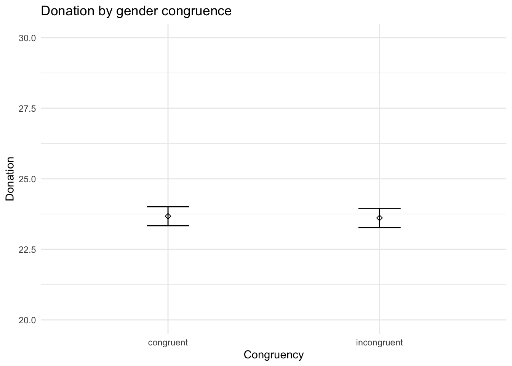
trials %>%
ggplot(aes(cond_metaphor, donation, color = congruency)) + itheme +
geom_errorbars +
labs(x = "Congruency", y = "Donation", title = "Donation by gender congruence and metaphor") +
coord_cartesian(ylim=c(19, 29))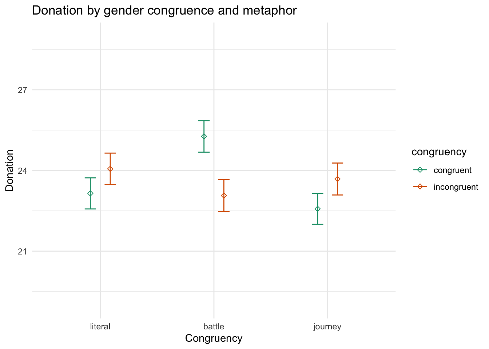
NH: Gender identity congruence for males and females does not affect donations
model_congruent_base = lm(update(base.formula, donation ~ .),
data = trials)
model_congruent_full = lm(update(base.formula, donation ~ . + congruency),
data = trials)
compare_lm(model_congruent_base, model_congruent_full)## Analysis of Variance Table
##
## Model 1: donation ~ cond_sex + self_cancer + ff_cancer + gender + education +
## socioeconomic + past_donations.z + age.z
## Model 2: donation ~ cond_sex + self_cancer + ff_cancer + gender + education +
## socioeconomic + past_donations.z + age.z + congruency
## Res.Df RSS Df Sum of Sq Pr(>Chi)
## 1 4560 1172938
## 2 4559 1172926 1 11.894 0.8298
## [1] Chisq Stat: 0.046NH: Gender identity congruence for males and females does not affect donations conditional on metaphor
model_congruent_base = lm(update(base.formula, donation ~ . + cond_metaphor),
data = trials)
model_congruent_mid = lm(update(base.formula, donation ~ . + cond_metaphor + congruency),
data = trials)
model_congruent_full = lm(update(base.formula, donation ~ . + cond_metaphor * congruency),
data = trials)
compare_lm(model_congruent_base, model_congruent_mid)## Analysis of Variance Table
##
## Model 1: donation ~ cond_sex + self_cancer + ff_cancer + gender + education +
## socioeconomic + past_donations.z + age.z + cond_metaphor
## Model 2: donation ~ cond_sex + self_cancer + ff_cancer + gender + education +
## socioeconomic + past_donations.z + age.z + cond_metaphor +
## congruency
## Res.Df RSS Df Sum of Sq Pr(>Chi)
## 1 4558 1171827
## 2 4557 1171813 1 14.163 0.8145
## [1] Chisq Stat: 0.055compare_lm(model_congruent_mid, model_congruent_full)## Analysis of Variance Table
##
## Model 1: donation ~ cond_sex + self_cancer + ff_cancer + gender + education +
## socioeconomic + past_donations.z + age.z + cond_metaphor +
## congruency
## Model 2: donation ~ cond_sex + self_cancer + ff_cancer + gender + education +
## socioeconomic + past_donations.z + age.z + cond_metaphor +
## congruency + cond_metaphor:congruency
## Res.Df RSS Df Sum of Sq Pr(>Chi)
## 1 4557 1171813
## 2 4555 1169141 2 2671.5 0.005494 **
## ---
## Signif. codes: 0 '***' 0.001 '**' 0.01 '*' 0.05 '.' 0.1 ' ' 1
## [1] Chisq Stat: 10.465## Warning in if (cls == c("lm") | cls == c("glm", "lm")) {: the condition has
## length > 1 and only the first element will be used## MODEL INFO:
## Observations: 4585
## Dependent Variable: donation
## Type: OLS linear regression
##
## MODEL FIT:
## F(29,4555) = 4.288, p = 0.000
## R² = 0.027
## Adj. R² = 0.020
##
## Standard errors: OLS
## ----------------------------------------------------------------------------
## Est. 2.5% 97.5%
## ------------------------------------------------ -------- --------- --------
## (Intercept) 22.685 16.338 29.031
## cond_sexfemale -0.463 -1.395 0.470
## self_cancerY 4.844 2.612 7.076
## self_cancerOO 4.917 0.036 9.798
## ff_cancerY 1.918 0.915 2.921
## ff_cancerOO 3.789 0.242 7.336
## genderF 1.009 0.059 1.958
## genderNB 2.335 -4.025 8.695
## genderOO -5.666 -14.579 3.247
## educationHS -3.093 -9.357 3.171
## educationA -3.126 -9.477 3.226
## educationB -1.630 -7.878 4.617
## educationM 0.002 -6.345 6.349
## educationP -1.169 -8.022 5.684
## educationD -2.455 -9.531 4.621
## educationOO -3.205 -13.081 6.671
## socioeconomic10-25k -0.961 -2.719 0.797
## socioeconomic25-50k 0.134 -1.461 1.728
## socioeconomic50-75k 1.101 -0.594 2.796
## socioeconomic75-100k 1.976 0.026 3.925
## socioeconomic100-150k 1.047 -1.198 3.291
## socioeconomic>150k 1.840 -1.320 5.001
## socioeconomicOO -2.128 -5.305 1.049
## past_donations.z 1.063 0.132 1.993
## age.z 0.401 -0.548 1.351
## cond_metaphorbattle 2.264 0.674 3.854
## cond_metaphorjourney -0.575 -2.180 1.030
## congruencyincongruent 1.120 -0.477 2.717
## cond_metaphorbattle:congruencyincongruent -3.184 -5.454 -0.913
## cond_metaphorjourney:congruencyincongruent 0.135 -2.138 2.409
## ----------------------------------------------------------------------------
##
## -----------------------------------------------------------------
## t val. p
## ------------------------------------------------ -------- -------
## (Intercept) 7.008 0.000
## cond_sexfemale -0.973 0.331
## self_cancerY 4.254 0.000
## self_cancerOO 1.975 0.048
## ff_cancerY 3.750 0.000
## ff_cancerOO 2.094 0.036
## genderF 2.083 0.037
## genderNB 0.720 0.472
## genderOO -1.246 0.213
## educationHS -0.968 0.333
## educationA -0.965 0.335
## educationB -0.512 0.609
## educationM 0.001 0.999
## educationP -0.334 0.738
## educationD -0.680 0.496
## educationOO -0.636 0.525
## socioeconomic10-25k -1.072 0.284
## socioeconomic25-50k 0.165 0.869
## socioeconomic50-75k 1.274 0.203
## socioeconomic75-100k 1.987 0.047
## socioeconomic100-150k 0.914 0.361
## socioeconomic>150k 1.141 0.254
## socioeconomicOO -1.313 0.189
## past_donations.z 2.238 0.025
## age.z 0.829 0.407
## cond_metaphorbattle 2.792 0.005
## cond_metaphorjourney -0.702 0.483
## congruencyincongruent 1.375 0.169
## cond_metaphorbattle:congruencyincongruent -2.749 0.006
## cond_metaphorjourney:congruencyincongruent 0.116 0.907
## -----------------------------------------------------------------5.3.1 Gender Congruence on Sympathy
trials %>%
ggplot(aes(cond_metaphor, sympathy, color = congruency)) + itheme +
geom_errorbars +
coord_cartesian(ylim = c(4.5, 6))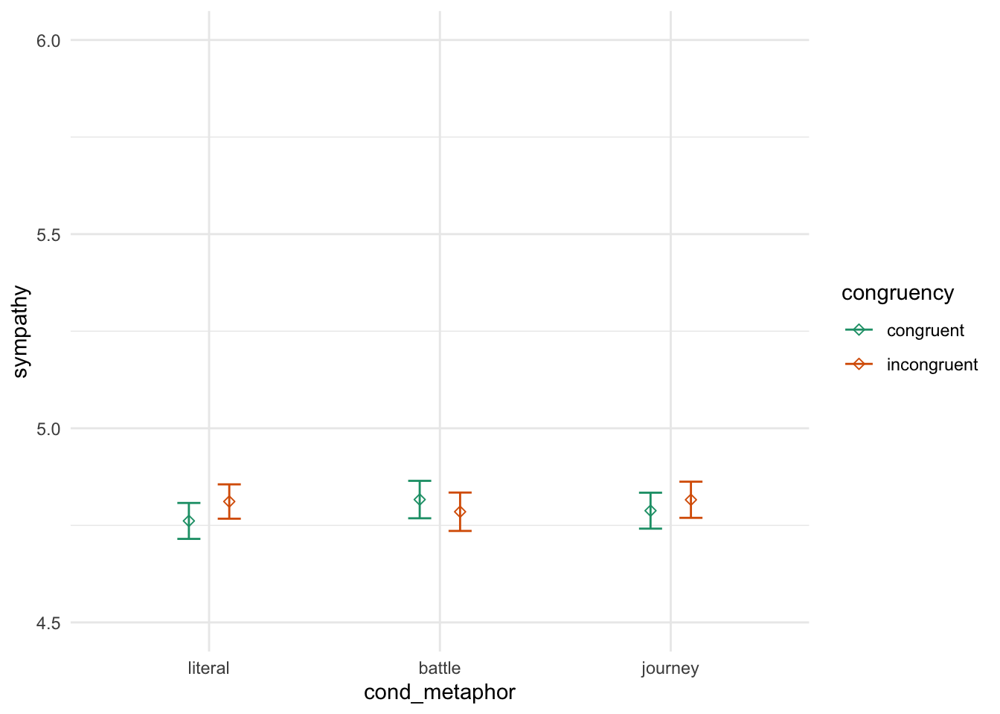
model_congruent_base = lm(update(base.formula, sympathy ~ . + cond_metaphor),
data = trials)
model_congruent_mid = lm(update(base.formula, sympathy ~ . + cond_metaphor + congruency),
data = trials)
model_congruent_full = lm(update(base.formula, sympathy ~ . + cond_metaphor * congruency),
data = trials)
compare_lm(model_congruent_base, model_congruent_mid)## Analysis of Variance Table
##
## Model 1: sympathy ~ cond_sex + self_cancer + ff_cancer + gender + education +
## socioeconomic + past_donations.z + age.z + cond_metaphor
## Model 2: sympathy ~ cond_sex + self_cancer + ff_cancer + gender + education +
## socioeconomic + past_donations.z + age.z + cond_metaphor +
## congruency
## Res.Df RSS Df Sum of Sq Pr(>Chi)
## 1 4558 7466.4
## 2 4557 7465.4 1 1.0099 0.4324
## [1] Chisq Stat: 0.62compare_lm(model_congruent_mid, model_congruent_full)## Analysis of Variance Table
##
## Model 1: sympathy ~ cond_sex + self_cancer + ff_cancer + gender + education +
## socioeconomic + past_donations.z + age.z + cond_metaphor +
## congruency
## Model 2: sympathy ~ cond_sex + self_cancer + ff_cancer + gender + education +
## socioeconomic + past_donations.z + age.z + cond_metaphor +
## congruency + cond_metaphor:congruency
## Res.Df RSS Df Sum of Sq Pr(>Chi)
## 1 4557 7465.4
## 2 4555 7463.3 2 2.0938 0.5279
## [1] Chisq Stat: 1.286Gender congruence does not have a significant linear relationship with perceived sympathy beyond the metaphor condition.
5.3.2 Gender Congruence on Urgency
trials %>%
ggplot(aes(cond_metaphor, urgent, color = congruency)) + itheme +
geom_errorbars +
coord_cartesian(ylim = c(4, 6))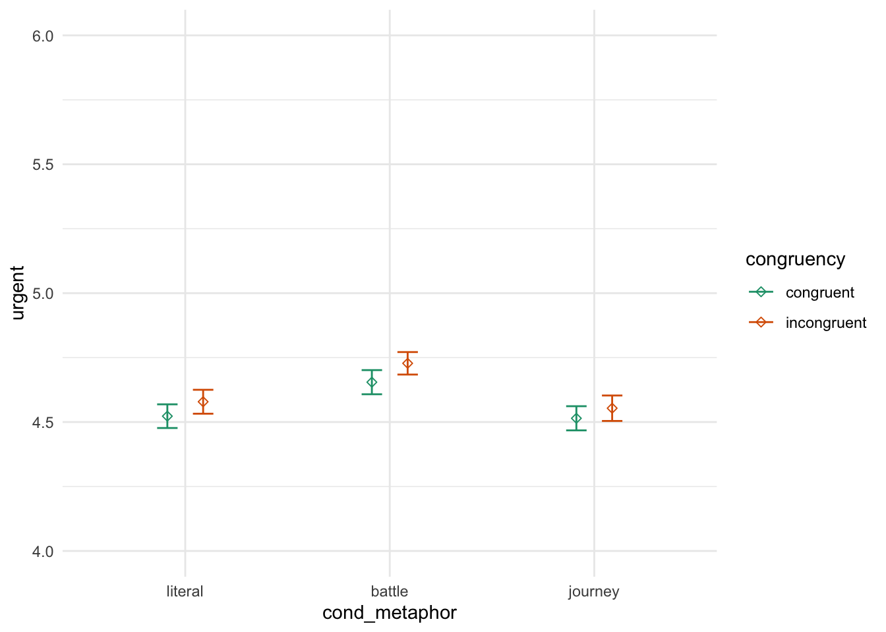
model_congruent_base = lm(update(base.formula, urgent ~ . + cond_metaphor),
data = trials)
model_congruent_mid = lm(update(base.formula, urgent ~ . + cond_metaphor + congruency),
data = trials)
model_congruent_full = lm(update(base.formula, urgent ~ . + cond_metaphor * congruency),
data = trials)
compare_lm(model_congruent_base, model_congruent_mid)## Analysis of Variance Table
##
## Model 1: urgent ~ cond_sex + self_cancer + ff_cancer + gender + education +
## socioeconomic + past_donations.z + age.z + cond_metaphor
## Model 2: urgent ~ cond_sex + self_cancer + ff_cancer + gender + education +
## socioeconomic + past_donations.z + age.z + cond_metaphor +
## congruency
## Res.Df RSS Df Sum of Sq Pr(>Chi)
## 1 4558 7507.7
## 2 4557 7503.6 1 4.0842 0.1153
## [1] Chisq Stat: 2.495compare_lm(model_congruent_mid, model_congruent_full)## Analysis of Variance Table
##
## Model 1: urgent ~ cond_sex + self_cancer + ff_cancer + gender + education +
## socioeconomic + past_donations.z + age.z + cond_metaphor +
## congruency
## Model 2: urgent ~ cond_sex + self_cancer + ff_cancer + gender + education +
## socioeconomic + past_donations.z + age.z + cond_metaphor +
## congruency + cond_metaphor:congruency
## Res.Df RSS Df Sum of Sq Pr(>Chi)
## 1 4557 7503.6
## 2 4555 7503.4 2 0.20786 0.9389
## [1] Chisq Stat: 0.127Gender congruence does not have a significant linear relationship with perceived urgency beyond the metaphor condition.
5.4 Self Cancer
H: Participants who have been treated for cancer donate more than those who haven’t
trials %>%
ggplot(aes(self_cancer, donation)) + itheme +
geom_errorbars +
labs(x = "Self Cancer", y = "Donation", title = "Past self experience and donations") +
coord_cartesian(ylim = c(20, 35))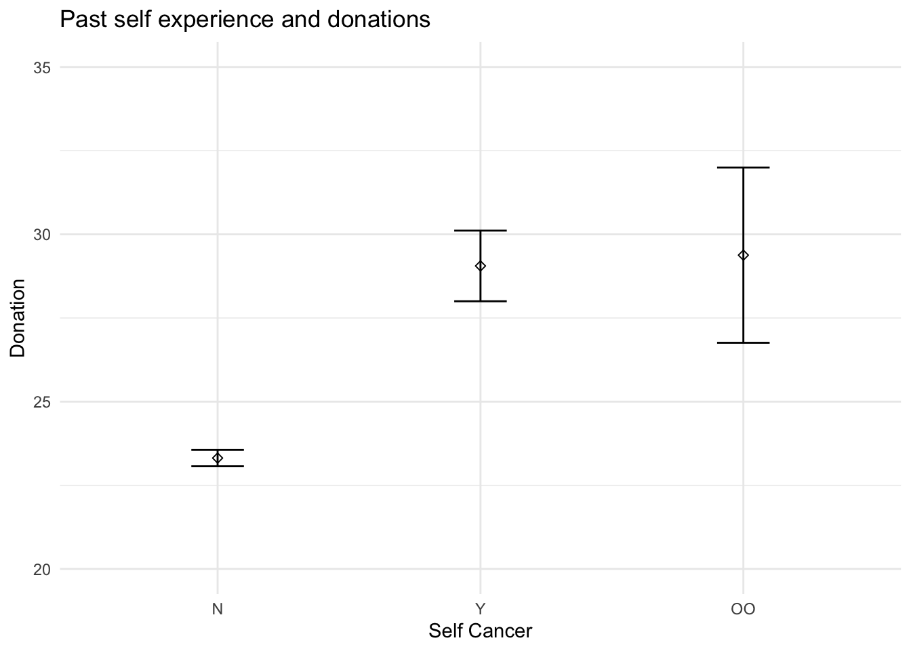
model_selfcancer_base = lm(update(base.formula, donation ~ . - self_cancer), data = trials)
model_selfcancer_full = lm(update(base.formula, donation ~ .), data = trials)
compare_lm(model_selfcancer_base, model_selfcancer_full)## Analysis of Variance Table
##
## Model 1: donation ~ cond_sex + ff_cancer + gender + education + socioeconomic +
## past_donations.z + age.z
## Model 2: donation ~ cond_sex + self_cancer + ff_cancer + gender + education +
## socioeconomic + past_donations.z + age.z
## Res.Df RSS Df Sum of Sq Pr(>Chi)
## 1 4562 1178391
## 2 4560 1172938 2 5452.9 2.493e-05 ***
## ---
## Signif. codes: 0 '***' 0.001 '**' 0.01 '*' 0.05 '.' 0.1 ' ' 1
## [1] Chisq Stat: 21.266## Warning in if (cls == c("lm") | cls == c("glm", "lm")) {: the condition has
## length > 1 and only the first element will be used## MODEL INFO:
## Observations: 4585
## Dependent Variable: donation
## Type: OLS linear regression
##
## MODEL FIT:
## F(24,4560) = 4.555, p = 0.000
## R² = 0.023
## Adj. R² = 0.018
##
## Standard errors: OLS
## ------------------------------------------------------------------------
## Est. 2.5% 97.5% t val. p
## --------------------------- -------- --------- -------- -------- -------
## (Intercept) 23.398 17.120 29.676 7.307 0.000
## cond_sexfemale -0.454 -1.385 0.478 -0.955 0.340
## self_cancerY 4.759 2.525 6.993 4.177 0.000
## self_cancerOO 5.012 0.128 9.896 2.012 0.044
## ff_cancerY 1.871 0.868 2.874 3.657 0.000
## ff_cancerOO 3.793 0.246 7.341 2.096 0.036
## genderF 0.994 0.044 1.944 2.052 0.040
## genderNB 2.426 -3.921 8.774 0.749 0.454
## genderOO -5.698 -14.610 3.213 -1.254 0.210
## educationHS -3.106 -9.374 3.163 -0.971 0.331
## educationA -3.114 -9.471 3.242 -0.961 0.337
## educationB -1.664 -7.917 4.589 -0.522 0.602
## educationM -0.001 -6.353 6.352 -0.000 1.000
## educationP -1.300 -8.157 5.558 -0.372 0.710
## educationD -2.559 -9.641 4.523 -0.708 0.479
## educationOO -3.159 -13.042 6.725 -0.627 0.531
## socioeconomic10-25k -1.020 -2.779 0.739 -1.136 0.256
## socioeconomic25-50k 0.095 -1.501 1.691 0.116 0.908
## socioeconomic50-75k 1.089 -0.607 2.785 1.259 0.208
## socioeconomic75-100k 1.947 -0.004 3.899 1.957 0.050
## socioeconomic100-150k 1.017 -1.230 3.263 0.887 0.375
## socioeconomic>150k 1.649 -1.511 4.809 1.023 0.306
## socioeconomicOO -2.156 -5.336 1.024 -1.329 0.184
## past_donations.z 1.080 0.149 2.012 2.274 0.023
## age.z 0.412 -0.538 1.362 0.850 0.395
## ------------------------------------------------------------------------Past personal experience with cancer significantly predicts donation behavior (Chisq = 8.9, p < 0.001)
5.5 Friends and Family Cancer
trials %>%
ggplot(aes(ff_cancer, donation)) + itheme +
geom_errorbars +
labs(x = "Friends & Family Cancer", y = "Donation", title = "Friends & family experience and donations") +
coord_cartesian(ylim = c(20, 35))model_ffcancer_base = lm(update(base.formula, donation ~ . - ff_cancer), data = trials)
model_ffcancer_full = lm(update(base.formula, donation ~ .), data = trials)
compare_lm(model_ffcancer_base, model_ffcancer_full)## Analysis of Variance Table
##
## Model 1: donation ~ cond_sex + self_cancer + gender + education + socioeconomic +
## past_donations.z + age.z
## Model 2: donation ~ cond_sex + self_cancer + ff_cancer + gender + education +
## socioeconomic + past_donations.z + age.z
## Res.Df RSS Df Sum of Sq Pr(>Chi)
## 1 4562 1176928
## 2 4560 1172938 2 3990.4 0.0004279 ***
## ---
## Signif. codes: 0 '***' 0.001 '**' 0.01 '*' 0.05 '.' 0.1 ' ' 1
## [1] Chisq Stat: 15.572## Warning in if (cls == c("lm") | cls == c("glm", "lm")) {: the condition has
## length > 1 and only the first element will be used## MODEL INFO:
## Observations: 4585
## Dependent Variable: donation
## Type: OLS linear regression
##
## MODEL FIT:
## F(24,4560) = 4.555, p = 0.000
## R² = 0.023
## Adj. R² = 0.018
##
## Standard errors: OLS
## ------------------------------------------------------------------------
## Est. 2.5% 97.5% t val. p
## --------------------------- -------- --------- -------- -------- -------
## (Intercept) 23.398 17.120 29.676 7.307 0.000
## cond_sexfemale -0.454 -1.385 0.478 -0.955 0.340
## self_cancerY 4.759 2.525 6.993 4.177 0.000
## self_cancerOO 5.012 0.128 9.896 2.012 0.044
## ff_cancerY 1.871 0.868 2.874 3.657 0.000
## ff_cancerOO 3.793 0.246 7.341 2.096 0.036
## genderF 0.994 0.044 1.944 2.052 0.040
## genderNB 2.426 -3.921 8.774 0.749 0.454
## genderOO -5.698 -14.610 3.213 -1.254 0.210
## educationHS -3.106 -9.374 3.163 -0.971 0.331
## educationA -3.114 -9.471 3.242 -0.961 0.337
## educationB -1.664 -7.917 4.589 -0.522 0.602
## educationM -0.001 -6.353 6.352 -0.000 1.000
## educationP -1.300 -8.157 5.558 -0.372 0.710
## educationD -2.559 -9.641 4.523 -0.708 0.479
## educationOO -3.159 -13.042 6.725 -0.627 0.531
## socioeconomic10-25k -1.020 -2.779 0.739 -1.136 0.256
## socioeconomic25-50k 0.095 -1.501 1.691 0.116 0.908
## socioeconomic50-75k 1.089 -0.607 2.785 1.259 0.208
## socioeconomic75-100k 1.947 -0.004 3.899 1.957 0.050
## socioeconomic100-150k 1.017 -1.230 3.263 0.887 0.375
## socioeconomic>150k 1.649 -1.511 4.809 1.023 0.306
## socioeconomicOO -2.156 -5.336 1.024 -1.329 0.184
## past_donations.z 1.080 0.149 2.012 2.274 0.023
## age.z 0.412 -0.538 1.362 0.850 0.395
## ------------------------------------------------------------------------Past friends & family experience with cancer significantly predicts donation behavior (Chisq = 7.7, p < 0.001).
# b = trials %>%
# filter(self_cancer != "OO") %>%
# ggplot(aes(self_cancer, donation)) + ptheme +
# stat_summary(fun.data = mean_se, geom = "errorbar", width = 0.2) +
# stat_summary(fun.data = mean_se, geom = "point", shape = 5) +
# scale_x_discrete(labels = c("N" = "Have not been\ntreated", "Y" = "Have been treated")) +
# labs(x = element_blank(), y = "Donation", title = "Self has had Cancer Treatment\nand Donations") +
# scale_y_continuous(labels = scales::dollar) +
# coord_cartesian(ylim = c(20, 32)) +
# geom_signif(comparisons = list(c("N", "Y")),
# textsize = 2.75,
# y_position = 31,
# tip_length = c(0.05, 0.01),
# annotations = "list({\U03C7^2}(2) == 17.8, ~~ p < 0.001)",
# parse = T)# g = grid.arrange(a, b, nrow = 1)
# ggsave("covariates.png", g, width = pwidth, height = pheight, bg = "transparent")5.6 Education
NH: Education level has no linear correlation with donation amount
trials %>%
filter(education != "OO") %>%
mutate(education_order = ordered(education)) %>%
ggplot(aes(education_order, donation)) + itheme +
geom_errorbars +
labs(x = "Education", y = "Donation", title = "Education and donations") +
coord_cartesian(ylim = c(20, 30))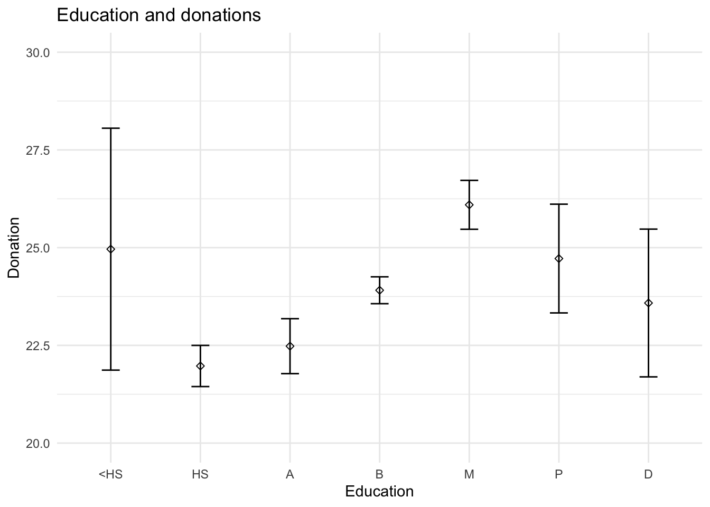
model_education_base = lm(update(base.formula, donation ~ . - education),
data = trials %>%
filter(education != "OO") %>%
mutate(education = ordered(education)))
model_education_full = lm(update(base.formula, donation ~ .),
data = trials %>%
filter(education != "OO") %>%
mutate(education = ordered(education)))
compare_lm(model_education_base, model_education_full)## Analysis of Variance Table
##
## Model 1: donation ~ cond_sex + self_cancer + ff_cancer + gender + socioeconomic +
## past_donations.z + age.z
## Model 2: donation ~ cond_sex + self_cancer + ff_cancer + gender + education +
## socioeconomic + past_donations.z + age.z
## Res.Df RSS Df Sum of Sq Pr(>Chi)
## 1 4548 1173171
## 2 4542 1168762 6 4409.6 0.008795 **
## ---
## Signif. codes: 0 '***' 0.001 '**' 0.01 '*' 0.05 '.' 0.1 ' ' 1
## [1] Chisq Stat: 17.195## Warning in if (cls == c("lm") | cls == c("glm", "lm")) {: the condition has
## length > 1 and only the first element will be used## MODEL INFO:
## Observations: 4566
## Dependent Variable: donation
## Type: OLS linear regression
##
## MODEL FIT:
## F(23,4542) = 4.580, p = 0.000
## R² = 0.023
## Adj. R² = 0.018
##
## Standard errors: OLS
## ------------------------------------------------------------------------
## Est. 2.5% 97.5% t val. p
## --------------------------- -------- --------- -------- -------- -------
## (Intercept) 21.634 19.753 23.516 22.541 0.000
## cond_sexfemale -0.462 -1.396 0.471 -0.971 0.332
## self_cancerY 4.759 2.524 6.993 4.175 0.000
## self_cancerOO 5.164 0.274 10.055 2.070 0.038
## ff_cancerY 1.889 0.884 2.895 3.684 0.000
## ff_cancerOO 3.347 -0.257 6.952 1.821 0.069
## genderF 0.994 0.042 1.945 2.047 0.041
## genderNB 2.467 -3.882 8.816 0.762 0.446
## genderOO -5.745 -16.317 4.826 -1.065 0.287
## education.L -0.208 -4.441 4.025 -0.096 0.923
## education.Q 0.364 -3.540 4.269 0.183 0.855
## education.C -3.069 -6.287 0.150 -1.869 0.062
## education^4 0.811 -1.622 3.244 0.653 0.514
## education^5 0.625 -1.202 2.451 0.670 0.503
## education^6 0.340 -0.860 1.540 0.556 0.578
## socioeconomic10-25k -0.909 -2.672 0.854 -1.011 0.312
## socioeconomic25-50k 0.173 -1.427 1.773 0.212 0.832
## socioeconomic50-75k 1.181 -0.519 2.881 1.362 0.173
## socioeconomic75-100k 2.036 0.081 3.990 2.042 0.041
## socioeconomic100-150k 1.102 -1.147 3.352 0.961 0.337
## socioeconomic>150k 1.733 -1.429 4.895 1.075 0.283
## socioeconomicOO -1.564 -4.810 1.683 -0.944 0.345
## past_donations.z 1.083 0.151 2.015 2.278 0.023
## age.z 0.399 -0.552 1.350 0.823 0.410
## ------------------------------------------------------------------------There is not signficant evidence that donation behavior is related to socioeconomic status. However, there is a marginally significant linear predictor through the ordered predictor for socioeconomic status (t = 1.665, p < 0.1).
5.7 Socioeconomics
NH: Socioeconomic status has no linear correlation with donation amount
trials %>%
filter(socioeconomic != "OO") %>%
mutate(socioeconomic_order = ordered(socioeconomic)) %>%
ggplot(aes(socioeconomic_order, donation)) + itheme +
geom_errorbars +
labs(x = "Socioeconomics", y = "Donation", title = "Socioeconomic and donations") +
coord_cartesian(ylim = c(20, 30))model_socioeconomic_base = lm(update(base.formula, donation ~ . - socioeconomic),
data = trials %>%
filter(socioeconomic != "OO") %>%
mutate(socioeconomic = ordered(socioeconomic)))
model_socioeconomic_full = lm(update(base.formula, donation ~ .),
data = trials %>%
filter(socioeconomic != "OO") %>%
mutate(socioeconomic = ordered(socioeconomic)))
compare_lm(model_socioeconomic_base, model_socioeconomic_full)## Analysis of Variance Table
##
## Model 1: donation ~ cond_sex + self_cancer + ff_cancer + gender + education +
## past_donations.z + age.z
## Model 2: donation ~ cond_sex + self_cancer + ff_cancer + gender + education +
## socioeconomic + past_donations.z + age.z
## Res.Df RSS Df Sum of Sq Pr(>Chi)
## 1 4443 1144792
## 2 4437 1141763 6 3028.2 0.06736 .
## ---
## Signif. codes: 0 '***' 0.001 '**' 0.01 '*' 0.05 '.' 0.1 ' ' 1
## [1] Chisq Stat: 11.816## Warning in if (cls == c("lm") | cls == c("glm", "lm")) {: the condition has
## length > 1 and only the first element will be used## MODEL INFO:
## Observations: 4461
## Dependent Variable: donation
## Type: OLS linear regression
##
## MODEL FIT:
## F(23,4437) = 4.418, p = 0.000
## R² = 0.022
## Adj. R² = 0.017
##
## Standard errors: OLS
## -------------------------------------------------------------------
## Est. 2.5% 97.5% t val. p
## ---------------------- -------- --------- -------- -------- -------
## (Intercept) 23.639 17.235 30.044 7.236 0.000
## cond_sexfemale -0.532 -1.477 0.412 -1.105 0.269
## self_cancerY 4.649 2.409 6.889 4.069 0.000
## self_cancerOO 5.200 0.221 10.179 2.047 0.041
## ff_cancerY 1.857 0.841 2.873 3.583 0.000
## ff_cancerOO 3.553 -0.153 7.259 1.880 0.060
## genderF 0.937 -0.025 1.899 1.909 0.056
## genderNB 2.276 -4.205 8.757 0.688 0.491
## genderOO -4.617 -16.677 7.444 -0.750 0.453
## educationHS -2.705 -9.099 3.689 -0.829 0.407
## educationA -2.752 -9.234 3.730 -0.832 0.405
## educationB -1.074 -7.454 5.305 -0.330 0.741
## educationM 0.458 -6.021 6.937 0.138 0.890
## educationP -0.812 -7.795 6.171 -0.228 0.820
## educationD -1.575 -8.796 5.647 -0.427 0.669
## educationOO 4.107 -8.781 16.995 0.625 0.532
## socioeconomic.L 1.991 -0.063 4.045 1.900 0.057
## socioeconomic.Q -0.252 -2.086 1.582 -0.270 0.787
## socioeconomic.C -0.902 -2.571 0.767 -1.059 0.290
## socioeconomic^4 1.062 -0.438 2.562 1.388 0.165
## socioeconomic^5 0.305 -1.028 1.639 0.449 0.653
## socioeconomic^6 0.356 -0.778 1.491 0.616 0.538
## past_donations.z 1.073 0.141 2.005 2.258 0.024
## age.z 0.467 -0.488 1.422 0.959 0.338
## -------------------------------------------------------------------There is not signficant evidence that donation behavior is related to socioeconomic status. However, there is a marginally significant linear predictor through the ordered predictor for socioeconomic status (t = 1.665, p < 0.1).
5.8 Past Donations
NH: Participants with no history of charitable behavior have the same donation behavior as those with a history of charitable behavior
trials %>%
ggplot(aes(past_donations, donation)) + itheme +
geom_point(alpha = 0.1) +
geom_smooth(method = "lm") +
labs(x = "Past Donations", y = "Donation", title = "Past Donations and Donations")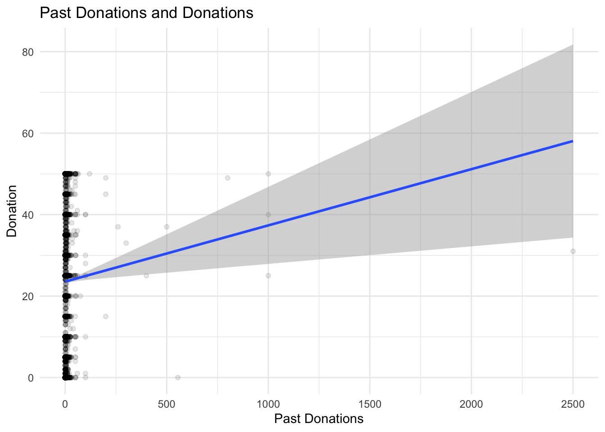
model_pastdonations_base = lm(update(base.formula, donation ~ . - past_donations.z), data = trials)
model_pastdonations_full = lm(update(base.formula, donation ~ .), data = trials)
compare_lm(model_pastdonations_base, model_pastdonations_full)## Analysis of Variance Table
##
## Model 1: donation ~ cond_sex + self_cancer + ff_cancer + gender + education +
## socioeconomic + age.z
## Model 2: donation ~ cond_sex + self_cancer + ff_cancer + gender + education +
## socioeconomic + past_donations.z + age.z
## Res.Df RSS Df Sum of Sq Pr(>Chi)
## 1 4561 1174268
## 2 4560 1172938 1 1329.8 0.02298 *
## ---
## Signif. codes: 0 '***' 0.001 '**' 0.01 '*' 0.05 '.' 0.1 ' ' 1
## [1] Chisq Stat: 5.195## Warning in if (cls == c("lm") | cls == c("glm", "lm")) {: the condition has
## length > 1 and only the first element will be used## MODEL INFO:
## Observations: 4585
## Dependent Variable: donation
## Type: OLS linear regression
##
## MODEL FIT:
## F(24,4560) = 4.555, p = 0.000
## R² = 0.023
## Adj. R² = 0.018
##
## Standard errors: OLS
## ------------------------------------------------------------------------
## Est. 2.5% 97.5% t val. p
## --------------------------- -------- --------- -------- -------- -------
## (Intercept) 23.398 17.120 29.676 7.307 0.000
## cond_sexfemale -0.454 -1.385 0.478 -0.955 0.340
## self_cancerY 4.759 2.525 6.993 4.177 0.000
## self_cancerOO 5.012 0.128 9.896 2.012 0.044
## ff_cancerY 1.871 0.868 2.874 3.657 0.000
## ff_cancerOO 3.793 0.246 7.341 2.096 0.036
## genderF 0.994 0.044 1.944 2.052 0.040
## genderNB 2.426 -3.921 8.774 0.749 0.454
## genderOO -5.698 -14.610 3.213 -1.254 0.210
## educationHS -3.106 -9.374 3.163 -0.971 0.331
## educationA -3.114 -9.471 3.242 -0.961 0.337
## educationB -1.664 -7.917 4.589 -0.522 0.602
## educationM -0.001 -6.353 6.352 -0.000 1.000
## educationP -1.300 -8.157 5.558 -0.372 0.710
## educationD -2.559 -9.641 4.523 -0.708 0.479
## educationOO -3.159 -13.042 6.725 -0.627 0.531
## socioeconomic10-25k -1.020 -2.779 0.739 -1.136 0.256
## socioeconomic25-50k 0.095 -1.501 1.691 0.116 0.908
## socioeconomic50-75k 1.089 -0.607 2.785 1.259 0.208
## socioeconomic75-100k 1.947 -0.004 3.899 1.957 0.050
## socioeconomic100-150k 1.017 -1.230 3.263 0.887 0.375
## socioeconomic>150k 1.649 -1.511 4.809 1.023 0.306
## socioeconomicOO -2.156 -5.336 1.024 -1.329 0.184
## past_donations.z 1.080 0.149 2.012 2.274 0.023
## age.z 0.412 -0.538 1.362 0.850 0.395
## ------------------------------------------------------------------------5.9 Age
ggplot(trials, aes(age, donation)) + itheme +
geom_point(alpha = 0.1) +
geom_smooth(method = "lm", formula = y ~ poly(x, 2))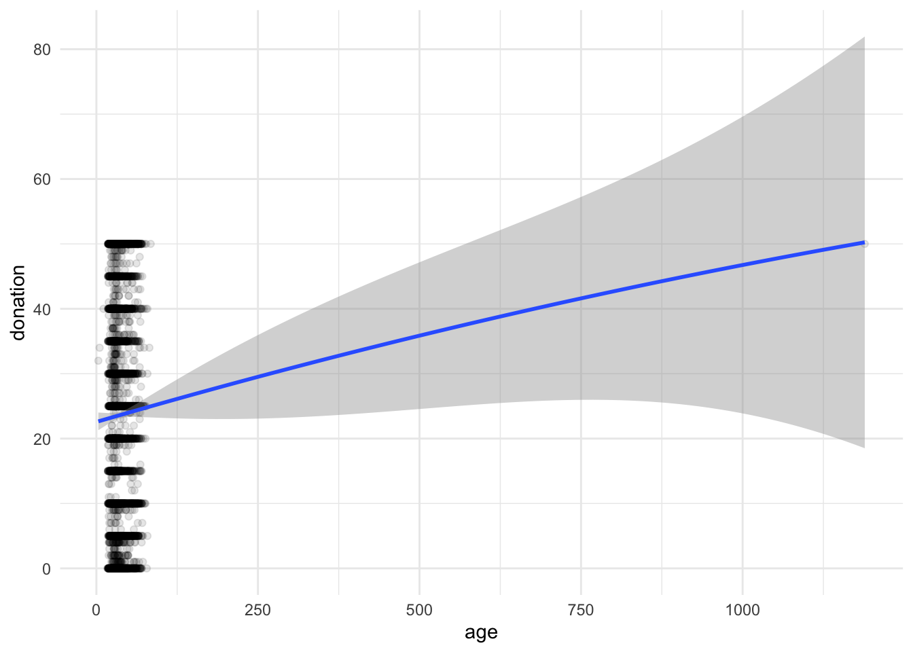
model_age_base = lm(update(base.formula, donation ~ . - age.z),
data = trials)
model_age_mid = lm(update(base.formula, donation ~ .),
data = trials)
model_age_full = lm(update(base.formula, donation ~ . + I(age.z^2)),
data = trials)
compare_lm(model_age_base, model_age_mid)## Analysis of Variance Table
##
## Model 1: donation ~ cond_sex + self_cancer + ff_cancer + gender + education +
## socioeconomic + past_donations.z
## Model 2: donation ~ cond_sex + self_cancer + ff_cancer + gender + education +
## socioeconomic + past_donations.z + age.z
## Res.Df RSS Df Sum of Sq Pr(>Chi)
## 1 4561 1173124
## 2 4560 1172938 1 185.8 0.3954
## [1] Chisq Stat: 0.726compare_lm(model_age_mid, model_age_full)## Analysis of Variance Table
##
## Model 1: donation ~ cond_sex + self_cancer + ff_cancer + gender + education +
## socioeconomic + past_donations.z + age.z
## Model 2: donation ~ cond_sex + self_cancer + ff_cancer + gender + education +
## socioeconomic + past_donations.z + age.z + I(age.z^2)
## Res.Df RSS Df Sum of Sq Pr(>Chi)
## 1 4560 1172938
## 2 4559 1172691 1 247.31 0.3268
## [1] Chisq Stat: 0.967